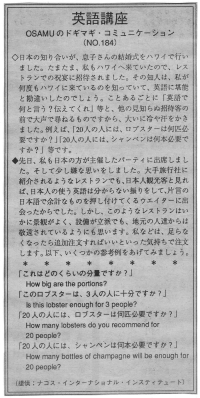

どのくらいの分量ですか。
日本の知り合いが、息子さんの結婚式をハワイで行いました。たまたま、私もハワイへ来ていたので、レストランでの祝宴に招待されました。その知人は、私が何度もハワイに来ているのを知っていて、英語に堪能と勘違いしたのでしょう。ことあるごとに「英語で何と言う？伝えてくれ」等と、他の見知らぬ招待客の前で大声で尋ねるものですから、大いに冷や汗をかきました。例えば、「２０人の人には、ロブスターは何匹必要ですか？」「２０人の人には、シャンペンは何本必要ですか？」等です。
先日、私も日本の方が主催したパーティーに出席しました。そして少し嫌な思いをしました。大手旅行社に紹介されるようなレストランでも、日本人観光客と見れば、日本人の使う英語は分からない振りをして、片言の日本語で余計なものを押し付けてくるウェイターに出会ったからでした。しかし、このようなレストランはいかに景観がよく、設備が立派でも、地元の人達からは敬遠されているようにも思います。私などは、足らなくなったら追加注文すればいいといった気持ちで注文します。以下、いくつかの参考例をあげてみましょう。
これはどのくらいの分量ですか。
How big are the portions?
このロブスターは、3人の人に十分ですか。
Is this lobster enough for 3 people?
２０人の人には、ロブスターは何匹必要ですか。
How many lobsters do you recommend for 20 people?
２０人の人には、シャンペンは何本必要ですか。
How many bottles of champagne will be enough for 20 people?

| © 1995-2013 NACOS International Institute. All Rights Reserved. |